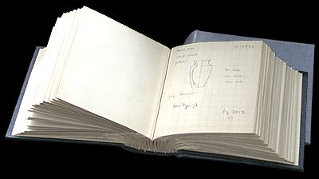

The Challenge -
Archaeologist's notebook

This is one of Leonard Woolley's notebooks. He used it to record the finds he made in the Royal Graves at Ur. These notes will have been used later to help him write up the details of his excavation. A great deal of valuable information would have been missing if the notebook had been lost.
To learn more about the work of archaeologists visit the Tombs Explore.
|
|